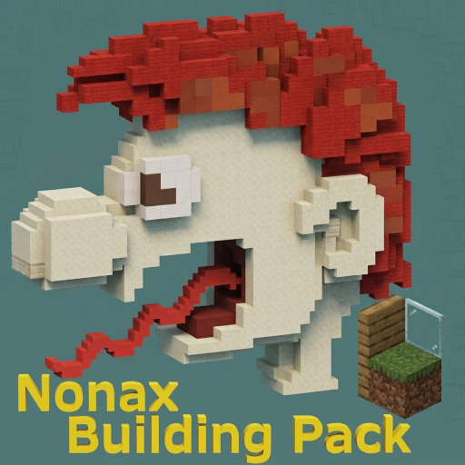
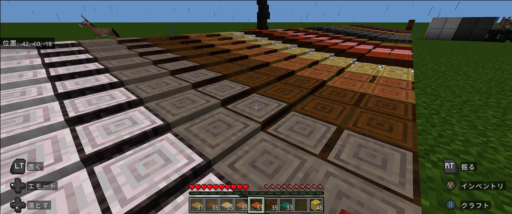
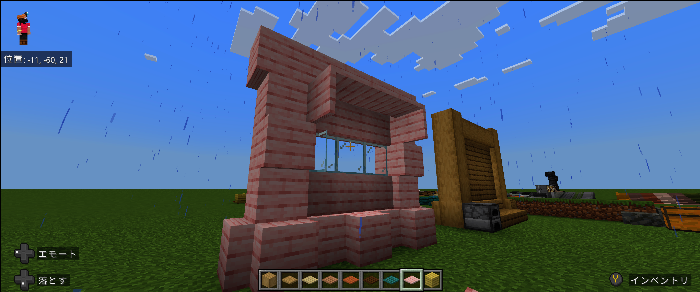
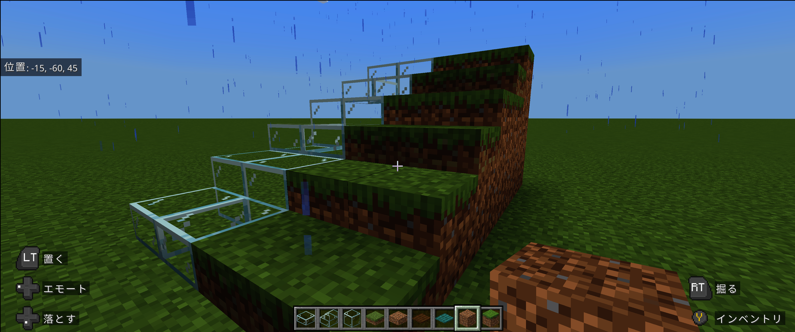

Minecraft Bedrock Add-on
Nonax Building Pack
バニラの世界観を壊さない。まるで最初からそこにあったかのように建築の幅を広げる、建築こだわり派のためのブロック追加アドオン。

コンセプト & 特徴
「バニラにあっても不思議じゃない」を形にしました
01
レイヤーブロック
わずか2ピクセル厚のブロック。縦にも横にも自由に積み重ねることができ、細やかな高さ調整や奥行きの表現が可能になります。Minecraft v26.52 全ブロック(198種類)対応済

02
木材系の塀ブロック
フェンス（柵）とは一味違う、建築の構造美を引き立てる木材ベースの「塀」ブロックを追加。より重厚感のある仕上がりに。

03
ハーフ・階段の充実
ガラスのハーフブロック・階段をはじめ、土や草ブロックのハーフブロックなど、バニラでは痒い所に手が届かなかったパーツを網羅。

ダウンロード
Minecraft Bedrock Edition (統合版) 対応
導入方法：ダウンロードしたファイルをダブルクリック（またはマイクラで開く）するだけでインポートできます。
※ワールドの設定で「実験的ゲームプレイ」の有効化は不要です。